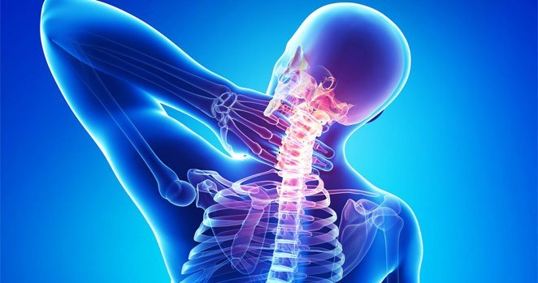

إصدار خاص من "صحتك"
اكتشاف مذهل في الطب: بلسم لتجديد مفاصلك.
من المحرر: يعاني شخص واحد من كل ثمانية من أمراض القرص التنكسية، وأمراض المفاصل المختلفة (التهاب المفاصل، والتهاب المفاصل، وعرق النسا). يمكن للمرء أن يقول إنها ليست قاتلة ولكن ... إنها تعني نهاية الحياة الجيدة لأولئك الذين يعانون منها بالفعل في المراحل الأولى من هذه الأمراض. في وقت لاحق، بسبب الحركة المقلدة، تأتي مشاكل مرتبطة مثل الفتق واضطرابات التمثيل الغذائي ومشاكل الحركة. سيكون موضوعنا اليوم كيفية التخلص من مشاكل الجهاز العضلي الهيكلي واستعادة الصحة!
مرحبا أصدقائي الأعزاء!
لسنوات عديدة، كنت على شاشاتكم للحديث عن مشاكل المفاصل. الأمراض المرتبطة بالمفاصل شائعة جدًا. لقد قيل الكثير عن أساليب علاج المفاصل ! عادة ما يكون دواء أو علاجًا جراحيًا. غالبًا ما نتحدث في عرضنا عن إجراءات الجراحة والأدوية، لكننا نادرًا ما نتعامل مع طرق بديلة للعلاج. إنها ليست مجرد وصفات لجداتنا. تم الاعتراف بهم في المجتمع العلمي وبالطبع أيضًا من قبل جمهورنا. اليوم سنتحدث عن الكولاجين، أهم بروتين في جسم الإنسان. إلى جانب العديد من المكونات الأخرى، يتم تضمينه في أحدث علاج - .

لذلك دعونا نرى كيف كل هذه المواد، والتي هي جزء من يمكن أن تساعد في حالة مثل هذا المرض الخطير؟ إذا كنت تتذكر، فقد ناقشت من قبل عدد قليل من القضايا، من بين مواضيع أخرى تحدثت عن كيفية شفاء آلام المفاصل. نحن بحاجة إلى إطلاق عملية "العودة"، أي إعادة خلايا الجسم إلى حالتها الأصلية. كما تعلم، يعالج الطب العواقب في معظم الحالات. لكن ما هو ضروري هو القضاء على السبب الجذري وإعادة الجسم إلى حالته الأصلية. هذا هو السبب في أنه بعد تناول الجرعة الصحيحة لبعض المواد الموجودة في هذا الدواء الفريد، يشعر غالبية المرضى بالراحة، كما لو كانوا قد ولدوا من جديد. شعر الكثيرون بطفرة في القوة والطاقة. اختفى الألم.
يساعد في التغلب حتى على مثل هذه الأمراض الرهيبة مثل التهاب المفاصل والتهاب المفاصل وأمراض القرص التنكسية. يقلل بشكل فعال من الالتهاب والألم في حالة المراحل الحادة من أمراض المفاصل والغضاريف والأربطة. أظهرت الدراسات أن هناك عدة أسباب لتدهور المفاصل: ضعف الدورة الدموية، والنظام الغذائي غير الصحي، ونمط الحياة المستقر، والاضطرابات المناعية، والتغيرات الهرمونية، والخلل الخلوي. أي أن النظام بأكمله له تأثير مباشر على الصحة. هذا هو ما يساعد في مكافحة المرض بشكل أكثر فعالية.
رباط
غضروف
زليلي
غشاء

مفصل صحي
تدهور
الغضروف
إضعاف
الأربطة
التهاب
زليلي
غشاء

مفصل تالف
يحتوي على مكونات طبيعية تحفز إنتاج الكولاجين في الجسم. يعيد هذا البلسم الأنسجة الضامة المعرضة للتلف. إنه يقوي نظام المفاصل، ويساعد الجسم على امتصاص العناصر الغذائية بشكل أفضل، ويعيد العمليات الأنزيمية في الخلايا. له تأثير إيجابي إضافي على نظام القلب والأوعية الدموية: فهو ينظف الأوعية الدموية ويحسن دوران الأوعية الدقيقة.
في الوقت الحالي، يوجد موقع ويب رسمي واحد فقط يبيع المنتج الأصلي بدلاً من التقليد الرخيص. قدمت قناتنا الكثير من المعلومات حول هذا الموضوع. ولا عجب! هذا ليس مجرد بلسم. هذا مزيج فريد من أندر وأقوى المواد العلاجية الطبيعية. أثبت هذا العلاج فعاليته ليس فقط للمرضى، ولكن أيضًا للعلم، الذي اعترف به كدواء فعال. وبحسب الفحوصات، فإن آلام المفاصل والظهر تختفي بعد التطبيق الأول، كما تم تأكيده خلال الفحوصات. الشيء الرئيسي هو اتباع تعليمات المستخدم بدقة!
اليوم، تمت دعوتنا إلى استوديو نهى سالم، أحد آلاف المرضى الذين استفادوا من ذلك :
نهى سالم: شعرت بالتحسن كل يوم. وتراجع ألم المفاصل بسرعة كبيرة. بالإضافة إلى ذلك، شعرت بتحسن
عام! كانت الأنسجة تلتئم بسرعة وتسارعت عمليات التمثيل الغذائي. يمكنني أن أتناول أي شيء عمليًا بل
وأجري الجري. أصبح هذا المسكن هو الحل الوحيد. الألم ذهب إلى الأبد. أصبحت بصحة جيدة. والأهم أن له
تأثير شامل. إنه سهل الاستخدام، ولا يترك بقعًا على الملابس، وهو مريح للغاية. والأهم من ذلك، أنه يحتوي
على مكونات طبيعية بالكامل.
يعيد الغضروف، عن طريق تحفيز إنتاج الكولاجين، بينما يستخدم أطبائنا مصطلحات غير مفهومة ويحاولون بيعنا
أدوية باهظة الثمن وليست جيدة ... أعرف ذلك لأنني جربته بنفسي .
دكتور طارق المشد: نهى، هل ستخبرنا بالتفصيل عن كيفية استخدام هذا العلاج الرائع؟
نهى سالم: الأمر بسيط للغاية! خذ كمية صغيرة من المسكن وقم بتطبيقه على مناطق المشكلة عن طريق حركات التدليك، وفرك حتى يتم امتصاصه. لا يمكن طلبه إلا على الموقع الرسمي. إذا كنت ترغب في الحصول عليه، عليك ملء التفاصيل الخاصة بك. على موقع الويب، اترك رقم هاتف يعمل حيث يمكن الوصول إليك لمناقشة التفاصيل. لا تكلف الأداة شيئًا، فيما يتعلق بالسعر الذي أنفقته على العلاج الآخر! بفضل نشرة المستخدم الواضحة، يسهل فهمها. لقد شعرت بالتحسينات بالفعل بعد الاستخدام الأول. جربه بنفسك وسترى.
دكتور طارق المشد: نهى، هل ستخبرنا بالتفصيل عن كيفية استخدام هذا العلاج الرائع؟
كما ترى، فإن الطريق إلى الصحة ليس بهذه الصعوبة. يمكن طلبها على الموقع الرسمي.

تعليقات
طلبته بسهولة. حصلت على في اليوم التالي عن طريق البريد. بدأ العلاج. سوف يقدم تقريرا في وقت لاحق عن النتائج. شكرا لك !
لقد فقدت عنوان الموقع ووجدته في النهاية. أنا متحمس لمشاركة النتائج. يعمل العجائب. بعد دورة واحدة، اختفت جميع مشاكل المفاصل. أشعر أنني أصغر بعشرين عامًا! شكرا لك .
مرحبا جميعا! أريد أن أقول شكراً دكتور طارق! ساعدتني أكوام !!! شعرت على الفور بالارتياح. ذهب الألم. لقد تحسن المزاج وأنا أستمتع بالحياة مرة أخرى! لقد كنت أستخدمه لمدة 10 أيام. شكرا جزيلا!
نتائج محفزة للغاية. بدءًا من الغد، أتمنى أن تتغير حياتي أيضًا. طلبت واستلامته بالبريد. ابدء. أسلوب فريد من نوعه. كما يقولون كل العبقرية سهلة! ".
لقد عانيت طوال حياتي من DDD، وآمل بشدة أن تساعد هذه الأشياء. أمر!
لقد طلبت لأبي في عيد الأب. هو أكبر مني بـ 25 عامًا، ولكن بعد ذلك سوف يعود شباب! أنا أستخدمه أيضًا، أشعر بالروعة، ليس إدمانًا! ))
مرحبا. معلومات مثيرة جدا للاهتمام. على الرغم من أنني عادة ما يصعب إقناعي، إلا أنني سأحاول. لا تيأس أبدا!
هذا العلاج لديه مجموعة من المراجعات. صديق لي لديه مشكلة مماثلة. قد أوصي به ...
لست متأكدا من هذا سوف تساعدني ... أشعر أنني مشلول.
جئت عبر هذه المقالة بالصدفة. وماذا ارى !! يتحدثون عن ! حسنًا، إنها ليست ملكنا، ولكن بمعنى أنني اشتريتها من أجل زوجي. إنه لا يعرف أنني أكتب هنا، لكن لا يزال. أريد أن أشارك حماسي! باختصار، لقد قرأت أيضًا المراجعات وطلبت الأشياء. فقد زوجي الأمل الأخير بحلول ذلك الوقت. أخذ أقراص، مساج، كل ذلك تسبب له بمشاكل في المعدة، كان يفقدها. وبعد ذلك ... لجعلها قصيرة، بدأنا في استخدامها واو، يا هلا! لا توجد مشاكل على الإطلاق، لقد عاد إلى الأسرة، في حالة معنوية جيدة مرة أخرى، نشط!
زوجي يعاني من التهاب المفاصل. ننتقل من طبيب إلى آخر معًا. أحبه، سأبذل حياتي من أجله، لكن لا يمكنني تخفيف آلامه. هناك أمل لنا أيضا. اعتقدت، لقد جربنا كل شيء.
يصعب تصديقه ... لكن الكثير من الناس يقولون إن هذا يجب أن ينجح. سأبدأ غدا!